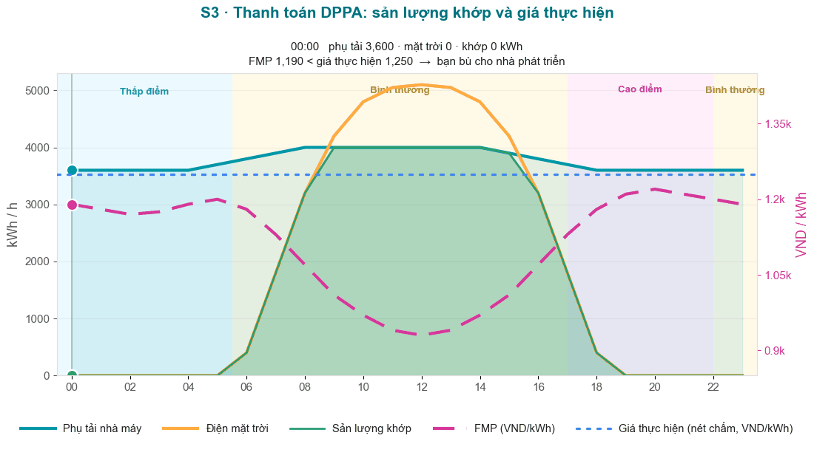

Kịch bản 3 — Dư thừa / Phát điện vượt mức (Phụ tải < Phát điện)
S1 · Khớp ✓S2 · Thiếu hụt ✓S3 · Dư thừa
Trường hợp điển hình thứ ba: điện mặt trời được xây dựng vượt mức (một tháng nhiều nắng),
nên sản lượng phát cao hơn mức tiêu thụ của nhà máy. Hóa đơn của bạn trông giống một tháng khớp —
nhưng phần dư thừa không tạo ra giá trị nào. Đây là cấu hình Workshop 3 trong công cụ
trực tuyến, và là rủi ro ký hợp đồng vượt mức mà CFO của bạn cần định giá.
Các thông số đầu vào (thay đổi gì so với Kịch bản 1 & 2)
Q_KH = 5.000.000
tiêu thụ kWh/tháng
Q_khc = 5.000.000
khớp & thanh toán
phát ≈ 6.500.000
sản lượng ghi nhận
dư thừa 1.500.000
chỉ bán theo giá spot
FMP = 1.100
nắng → dưới giá thực hiện
Giá TH = 1.250
P_c VND/kWh
k×K_pp = 1,0342
1,026 × 1,008
phí = 523,3
360 + 163,3
Bối cảnh
Mức tiêu thụ được phủ hoàn toàn bởi điện tái tạo khớp → không mua thêm điện từ EVN
(dòng 4 = 0), giống hệt Kịch bản 1. Điểm khác biệt nằm ở phía nhà máy điện: 1.500.000 kWh dư thừa mà
không hợp đồng CfD nào chạm tới.
1 · Xem nó chuyển động — sự kẹp giá ngày nắng
Điện mặt trời (cam) vượt lên trên phụ tải nhà máy (xanh) vào buổi trưa; sản lượng khớp (xanh lá) bị giới hạn ở mức tiêu thụ.

FMP giảm xuống ~930 vào buổi trưa (điện mặt trời tràn lưới) — luôn dưới giá thực hiện 1.250, nên CfD luôn dương: nhà máy bù cho nhà phát triển. Đường mặt trời (cam) nằm trên đường phụ tải (xanh) chính là phần dư thừa.
2 · Lập hóa đơn năm dòng (trên sản lượng tiêu thụ)
Hóa đơn chỉ thanh toán trên 5.000.000 kWh bạn tiêu thụ. Sản lượng dư thừa không bao giờ vào hóa đơn của bạn.
Một hóa đơn kiểu khớp: dòng 4 bằng 0 và CfD là một lát cắt dương (FMP dưới giá thực hiện). Phần dư thừa không xuất hiện trên hóa đơn này.
#
Dòng
Phép tính
VND/tháng
1
Điện năng thị trường
5.000.000 × 1.100 × 1,026 × 1,008
5.688.144.000
2
Phí dịch vụ
5.000.000 × 360
1.800.000.000
3
Phí bù trừ
5.000.000 × 163,30
816.500.000
4
Mua thêm bán lẻ
0 × 2.204
0
C_EVN
dòng 1 + 2 + 3 + 4
8.304.644.000
5
CfD
(1.250 − 1.100) × 5.000.000
+750.000.000
C_KH
C_EVN + CfD
9.054.644.000
3 · Phần dư thừa đi đâu (và vì sao không tạo giá trị)
CfD bị giới hạn ở sản lượng tiêu thụ. Mọi thứ phát vượt mức tiêu thụ chỉ được bán theo giá spot — không có giá thực hiện, cho cả hai bên.
4 · CfD chảy theo hướng nào?
FMP (1.100) dưới giá thực hiện (1.250) → CfD dương → nhà máy bù cho nhà phát triển — cùng hướng với Kịch bản 1, chênh lệch rộng hơn vì tháng nắng làm FMP mềm đi.
Ba trường hợp điển hình cùng nhauS1 Khớp: Q_c = Q_KH, dòng 4 = 0, CfD +500M.
S2 Thiếu hụt: Q_c < Q_KH, dòng 4 bán lẻ trở lại, CfD −800M.
S3 Dư thừa: phát > Q_KH, dòng 4 = 0 trở lại, CfD +750M, và dư thừa không tạo giá trị.
Trục sản lượng (khớp / thiếu / dư) là xương sống; dấu của CfD chỉ theo FMP so với giá thực hiện.
▶
Đây là Workshop 3 trong công cụ trực tuyến: dppa-case.web.app
→ Workshop 3. Hóa đơn năm dòng đọc C_EVN 8.304.644.000 và C_KH 9.054.644.000 với CfD
+750.000.000 — và biểu đồ ngày cho thấy điện mặt trời trên phụ tải.
Tự kiểm tra
1. 1.500.000 kWh phát điện dư thừa kiếm được ___
Phần dư trên mức tiêu thụ không thanh toán CfD — nhà phát triển bán theo giá spot FMP. Giá thực hiện không bao giờ chạm tới nó.
2. Vì tiêu thụ được khớp hoàn toàn, dòng 4 (mua thêm) là ___
Không thiếu hụt (Q_KH − Q_khc = 0) → dòng 4 = 0, giống Kịch bản 1. Phần dư ở phía phát điện, không trên hóa đơn.
3. C_KH của Kịch bản 3 bằng ___
C_EVN 8.304.644.000 + CfD (+750.000.000) = 9.054.644.000. (8,30B là C_EVN; 9,06B là C_KH của Kịch bản 1.)
Đọc tiếp
Mở dppa-case.web.app → Workshop 3 và đọc hóa đơn trực tiếp
so với bảng trên; chuyển Workshop 1 ↔ 2 ↔ 3 để cảm nhận khớp, thiếu hụt và dư thừa lần lượt. Ký hiệu:
bảng thuật ngữ.
Hoàn thành ba trường hợp điển hình. Sẵn sàng cho bài tập trực tiếp?
Mở buổi workshop nhóm — chia thành bên mua vs nhà phát triển, tính tay
cả ba kịch bản, rồi đàm phán giá thực hiện.